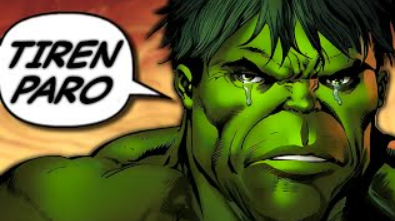

Avengers: Endgame
En 2018, 23 días después de que Thanos borrara la mitad de la vida en el universo, Carol Danvers rescata a Tony Stark y Nebula del espacio profundo. Se reúnen con los Vengadores restantes —Bruce Banner , Steve Rogers , Thor , Natasha Romanoff y James Rhodes— y Rocket en la Tierra. Al encontrar a Thanos en un planeta deshabitado , planean usar las Gemas del Infinito para revertir sus acciones, pero descubren que Thanos las ha destruido. Enfurecido, Thor decapita a Thanos. Cinco años después, Scott Lang escapa del Reino Cuántico . [ b ] Al llegar al Complejo de los Vengadores , informa a Rogers y Romanoff que solo experimentó cinco horas mientras estuvo atrapado. Teorizando que el Reino Cuántico permite viajar en el tiempo , le piden a un reacio Stark que los ayude a recuperar las Gemas del pasado para revertir las acciones presentes de Thanos. Stark, Rocket y Banner, quien ha fusionado su inteligencia con la fuerza de Hulk, construyen una máquina del tiempo. Banner teoriza que alterar el pasado no afectará el presente, ya que cualquier cambio creará realidades alternativas . Banner y Rocket viajan a Noruega , donde visitan el asentamiento de refugiados asgardianos de Nueva Asgard y reclutan a un Thor con sobrepeso y abatido. En Tokio, Romanoff recluta a Clint Barton , quien se convirtió en un justiciero después de que su familia fuera borrada. Banner, Lang, Rogers y Stark viajan en el tiempo a la ciudad de Nueva York durante el ataque de Loki en 2012. [ c ] En el Sanctum Sanctorum , Banner convence a la Anciana para que le dé la Gema del Tiempo después de prometer devolver las Gemas del Infinito a sus puntos correctos en el tiempo. En la Torre Stark , Rogers recupera la Gema de la Mente de agentes durmientes de Hydra , pero el intento de Stark y Lang de robar la Gema del Espacio falla, lo que permite que 2012-Loki escape con ella. Rogers y Stark viajan al Campamento Lehigh en 1970, donde Stark obtiene una versión anterior de la Gema del Espacio y se encuentra con su padre, Howard . Rogers roba Partículas Pym de Hank Pym para regresar al presente y ve a su amor perdido, Peggy Carter . Rocket y Thor viajan a Asgard en 2013. [ d ] Rocket extrae la Gema de la Realidad de Jane Foster , mientras que Thor es alentado por su madre, Frigga , y recupera su antiguo martillo, Mjolnir . Barton, Romanoff, Nebula y Rhodes viajan a 2014. Nebula y Rhodes van a Morag y roban la Gema del Poder antes de que Peter Quill pueda hacerlo, [ e ] mientras que Barton y Romanoff viajan a Vormir . El guardián de la Gema del Alma , Cráneo Rojo , dice que solo se puede obtener sacrificando a un ser querido. Romanoff se sacrifica, permitiendo que Barton obtenga la Gema. Rhodes y Nebula intentan regresar a su propio tiempo, pero Nebula queda incapacitada cuando sus implantes cibernéticos se conectan con su yo del pasado, lo que permite que Thanos de 2014 se entere del éxito de su yo del futuro y del intento de los Vengadores de deshacerlo. 2014-Thanos captura a Nebula y la envía al futuro para que se prepare para su llegada. Reunidos en el presente, los Vengadores colocan las Gemas en un guantelete que Stark, Banner y Rocket han construido. Banner, quien tiene la mayor resistencia a la radiación, usa el guantelete para deshacer las desintegraciones de Thanos. Mientras tanto, Nebula de 2014 (suplantando a su yo futuro) usa la máquina del tiempo para transportar a Thanos de 2014 y su nave de guerra al presente, donde destruye el Complejo de los Vengadores. La Nebula del presente convence a Gamora de 2014 para que traicione a Thanos, pero no logra convencer a la Nebula de 2014 y la mata. Thanos derrota a Stark, Thor y a Rogers, quien empuña Mjolnir. Convoca a su ejército para recuperar las Gemas, con la intención de usarlas para destruir el universo y crear uno nuevo. Un Stephen Strange restaurado llega con otros hechiceros , los Vengadores restaurados, los Guardianes de la Galaxia , los Saqueadores y los ejércitos de Wakanda y Asgard para luchar contra el ejército de Thanos. [ f ] Danvers también llega y destruye la nave de guerra de Thanos, pero Thanos la domina y se apodera del guantelete. Stark roba las Gemas y las usa para desintegrar a Thanos y su ejército, sacrificándose. Tras el funeral de Stark, Thor nombra a Valkyrie como la nueva reina de Nueva Asgard y se une a los Guardianes. Rogers devuelve las Gemas y Mjolnir a sus respectivas líneas temporales y permanece en el pasado para vivir con Carter. En el presente, un Rogers anciano le entrega su escudo a Sam Wilson
